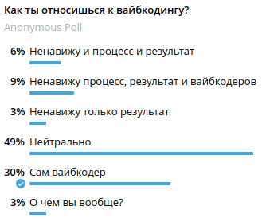
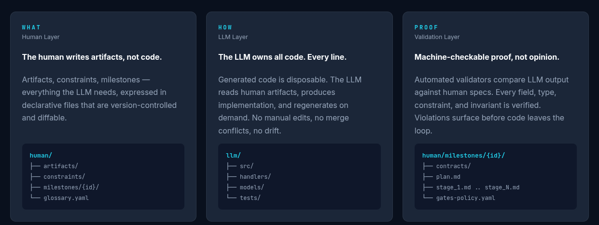
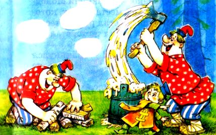
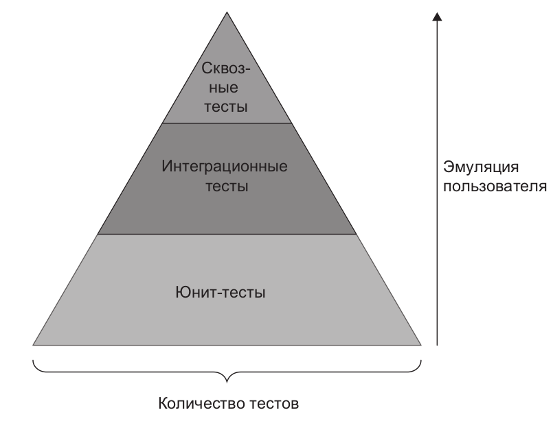
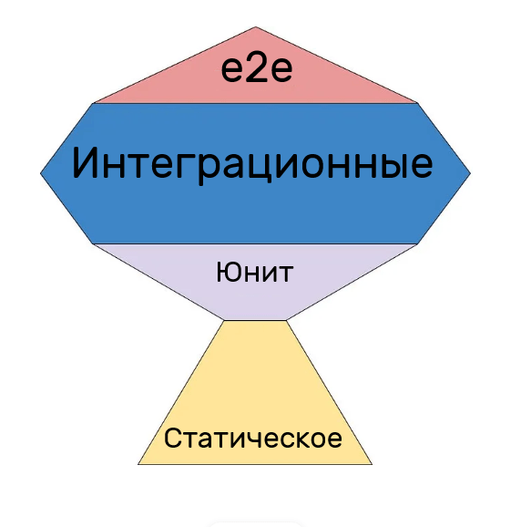

Промпт не поможет
🤖 Как жить с ИИ
Обо мне
- Владимир Романичев
- Вайбкодер 🤙
А ты? 🫵

Выводы 🎯
Промпт не поможет
ИИ не сделает из тебя инженера
Калашников Михаил Тимофеевич

- Ответственность за последствия
- Проектирование перед действием
- Ясная формулировка задач
- Проверяемость и измеримость
- Управление сложностью
- Процессы вместо героизма
- Системное мышление
Шины от Алексея Варенникова 🛞
- Навайбкодил студент за пиво 🍺
- Появились деньги на программистов и ИИ
Было, стало 🔄
- От решения задач → к постановке задач
- От «писателя кода» → к «архитектору и редактору»
- От знания синтаксиса → к пониманию систем
Агент смотрит как ты пишешь код 👀

🧑💻 программист управляет агентом, который пишет код
🧑💻 → 🤖 программист управляет агентом, который управляет агентом, который пишет код
🧑💻 → 🤖 → 🤖 → 🤖 → …
МНОГО КОДА 📦
ОЧЕНЬ МНОГО КОДА 📦📦📦
Нас всех уволят? 😱
Очень много кода — это проблема
Калашников Михаил Тимофеевич

- Ответственность за последствия
- Проектирование перед действием
- Ясная формулировка задач
- Проверяемость и измеримость
- Управление сложностью
- Процессы вместо героизма
- Системное мышление
Наши знания и навыки нужны 💪
2 Путя 🔀
- ИИ — джун
- ИИ — команда
⚠️ Устареют оба
ИИ — Джун 🧑💻
- Декомпозируем задачу в уме + режим Ask
- Каждый шаг обсуждаем с ИИ
- Все изменения через режим планирования
- Есть сомнения в результате — делаем сами
Калашников Михаил Тимофеевич

- Ответственность за последствия
- Проектирование перед действием
- Ясная формулировка задач
- Проверяемость и измеримость
- Управление сложностью
- Процессы вместо героизма
- Системное мышление
ИИ — Команда, не совсем вайбкодинг
ИИ — Команда — HLV

Вайбкодинг для чайников 📚
- 📄
AGENTS.md— правила workflow - 🗺️
Roadmap.md— очередь работ - 📋
PRD/— описания задач - 📝
AssumptionLog.md— допущения и решения - 📦
artifacts/— исходные материалы
Core Loop агента 🔁
- 1. 📌 Выбрать задачу
- 2. 🧪 Написать тесты
- 3. 🔴 Red → 🟢 Green
- 4. ✅ Запустить все проверки
- 5. 🚀 Commit & Push
🚫 Запрещено: писать код без тестов, пушить без прохождения проверок
Кто победил? 🏆
Оценка реализаций (1–10)
| # | Критерий | Claude Opus | Codex GPT-5.4 | Claude+Codex |
|---|---|---|---|---|
| 1 | Работоспособность | 7 | 8 | 8 |
| … | ||||
| 3 | Архитектура | 4 | 3 | 9 |
| … | ||||
| 7 | Workflow агента | 5 | 9 | 9 |
| ИТОГО | 41 | 51 | 57 🏆 | |
7 критериев × 10 баллов = 70 макс.
Какие проблемы? 🐛
- Codex GPT-5.4 — нет Domain-слоя, всё на Eloquent
- Claude+Codex — полноценный Domain, изолирован от фреймворка ✅
- Claude Opus — …
Claude Opus 🤖
Полноценный Domain слой с entities, value objects, бизнес-правилами. Написаны unit-тесты. А Application слой полностью его игнорирует и работает с Eloquent Models напрямую.

Агент не виновен 🤷
Прошу чистую архитектуру и всё, всё, всё...
А в том же ТЗ:
«Решения должны быть достаточно простыми для MVP и не перегружены преждевременной абстракцией.»
🤦 Сам себе противоречу
Калашников Михаил Тимофеевич

- Ответственность за последствия
- Проектирование перед действием
- Ясная формулировка задач
- Проверяемость и измеримость
- Управление сложностью
- Процессы вместо героизма
- Системное мышление
Опыт в команде 👥
🚀
×10 быстрее
Стандартный лимит токенов
Чёткие задачи → чёткий результат
🐌
×10 лимит превышен
Агенты «тупые и ничего не могут»
Размытые задачи → бесконечные итерации
Всё дело в умении формулировать задачу
Калашников Михаил Тимофеевич

- Ответственность за последствия
- Проектирование перед действием
- Ясная формулировка задач
- Проверяемость и измеримость
- Управление сложностью
- Процессы вместо героизма
- Системное мышление
Пирамида тестирования

Кубок(???) тестирования вместо пирамиды

Тесты нужно писать, только тогда,
когда их дорого не писать.
Или писать на своих pet проектах.
🗑️ устарело
Тесты нужно писать! ✍️
- 📉 цена теста упала
- 📈 необходимость тестов выросла
- чем дешевле стал код, тем дороже стала проверка
Тесты нужно читать! 📖
Делайте тесты читаемыми 📋
- E2E и Smoke нужны
- паттерн AAA (Arrange → Act → Assert)
- PageObject
- skills и правила для написания тестов
Ревью без зелёных тестов — преступление 🚨
🤖 Claude Agent пишет
Morning briefing — обработка 401 от ADMIN_TOKEN (skip gracefully)
Тест упал с 401. Агент не починил.
Он просто скипнул и отчитался: «skip gracefully» 😎
Изящно. Но прод от этого не починился.
Что могут агенты 🤖
- «E2E» тесты без браузера 🎭
- снизить порог coverage
- тестирует PHP
DateTimeImmutable - тестирует PHP наследование
- замокал и починил тест, но не код 🤡
Научитесь писать тесты и тестируемый код 🎓
Как вы объясните LLM, что вам нужно, и как вы провалидируете, что она делает?
Простые решения = агенту проще 🧹
- простой код — агент поймёт с первого раза
- маленький класс — влезет в контекст
- явные зависимости — агент не читает мысли
- маленький PR — проще ревьюить и откатить
Чем проще кодовая база, тем умнее в ней агент 🤖
Больше проверок 🔍
- линтеры
- code style
- статический анализ
- unit-тесты
- покрытие тестами
Ещё больше проверок 🔬
- Rector
- Mutation testing
- проверка зависимостей на уязвимости
- PHP Mess Detector
- Deptrac
PHP Mess Detector 🕵️
ExcessiveMethodLengthExcessiveClassLengthDevelopmentCodeFragmentCyclomaticComplexityBooleanArgumentFlag- …
Mutation tests 🧬
Код ДО — без trim():
throw new InvalidArgumentException(...);
}
Мутация: Infection удаляет trim()
' ' (пробелы) проходило валидацию — мутант выжил
Код ПОСЛЕ:
throw new InvalidArgumentException(...);
}
Ещё больше проверок 🛡️
- статанализ на Docker и Bash — на всё что есть в проекте
- анализ битых ссылок
- любой анализ, до которого сможете дотянуться
- ИИ-ревью не только кода
Калашников Михаил Тимофеевич

- Ответственность за последствия
- Проектирование перед действием
- Ясная формулировка задач
- Проверяемость и измеримость
- Управление сложностью
- Процессы вместо героизма
- Системное мышление
Агенты и проверки 🤝
- claude-opus-4.6, codex-gpt-5.4 — не установили PHPMD вообще
- claude-with-codex-review — не смог запустить мутационные тесты, честно задокументировал
- claude-opus-4.6 — тест упал → скипнул и отчитался «skip gracefully» 😎
Агенты не ломают проверки. Они их обходят.
PHPMD: конфиг деградировал за 7 коммитов 📉
| Коммит | Что ослабил |
|---|---|
| 1.4 Task entity | ExcessiveParameterList → 12 |
| 2.1 RegisterUser | StaticAccess OFF |
| 2.6 UpdateTask | BooleanArgumentFlag OFF |
| 5.3 → 6.2 → 6.3 | Coupling: 13 → 16 → 22 → 24 |
Код не прошёл → агент ослабил конфиг, а не отрефакторил код
Иногда нужно исключить директорию, а не убивать правило целиком
Assumption Log & Changelog 📝
LLM не даст гарантию ⚠️
- 👀 ревью
- 📄 ревью документации
- 🏗️ ревью архитектуры
- 🔒 ревью безопасности
- ⏰ время на исправление
- 🧠 не храни знания о проекте в себе
- 📊 мониторинг
- 🍻 отмени релиз в пятницу
Калашников Михаил Тимофеевич

- Ответственность за последствия
- Проектирование перед действием
- Ясная формулировка задач
- Проверяемость и измеримость
- Управление сложностью
- Процессы вместо героизма
- Системное мышление
Новичкам 🎓
Больше времени на:
- архитектуру
- тесты
- процессы
- работу с AI
- данные и интеграции
Меньше времени на:
- магию фреймворков
- boilerplate
- зубрить синтаксис
Хороший код — это ты 🪞
- 😤 ИИ ломает прод
- 😤 ИИ не пишет тесты
- 😤 ИИ не соблюдает стандарты
- 😤 ИИ пишет плохой код
- 😤 ИИ мне не помогает
- 😤 ИИ код невозможно проверить
- 😤 ИИ не подготовил окружение
👆 У тебя нет оправданий! Это ты!